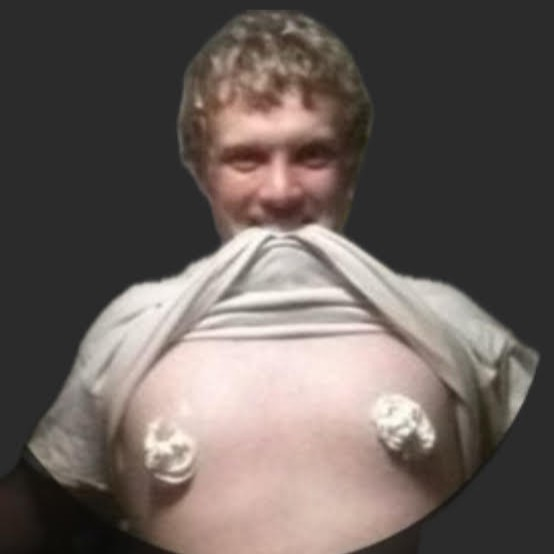
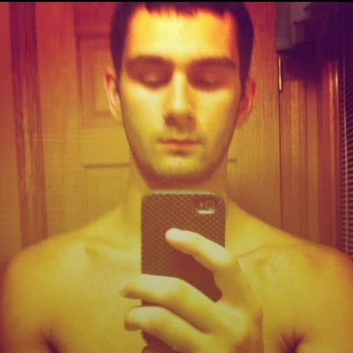
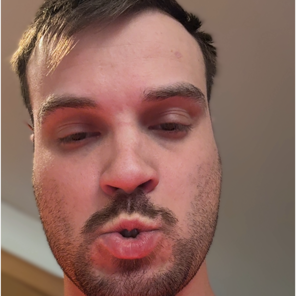
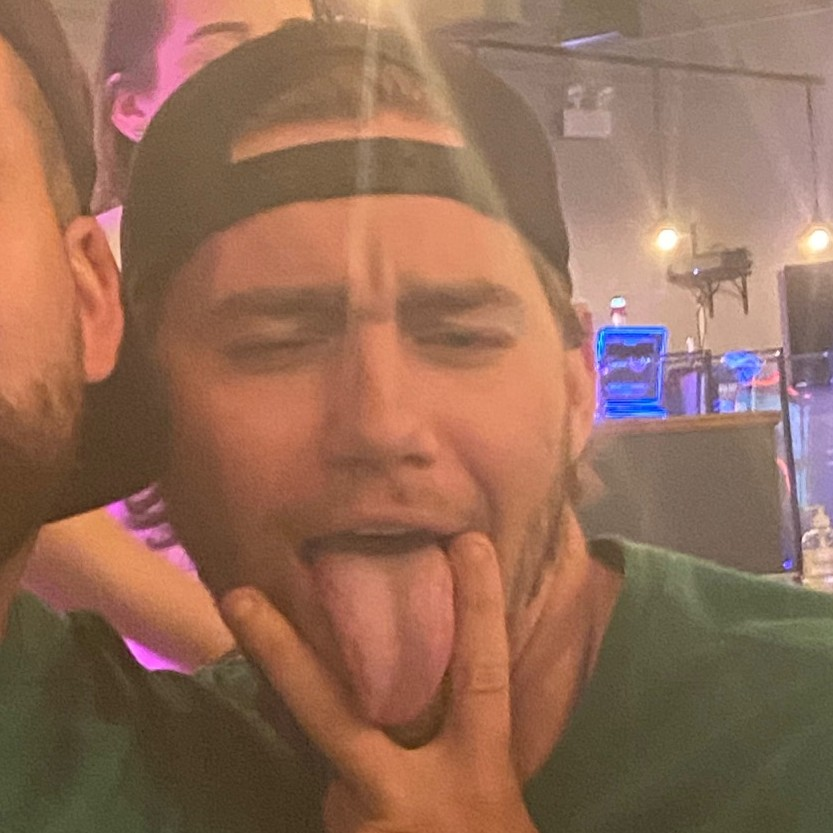

The UTI Weekly
BB's Bold Team moves to 11‑1 and looks unbeatable
The matchup of the week wasn't a matchup
Second against third was billed as a heavyweight fight. Goodyear swept all eight hitting categories, the staff posted a 1.81 ERA, and Me So Heorny hit .217 while throwing pool noodles.
- Hitting 8–0
- Pitching 5–3
- ERA 1.81 vs 3.91
- RBI 60 vs 32
BB is 11-1 and nobody knows how to stop it

You Don't Know BoEight straight wins. BB hit .297 with seven quality starts, and last year's GM of the Year keeps sliding back toward ninth.
- Hitting 5.5–2.5
- Pitching 6–2
- QS 7 vs 2
- ERA 2.87 vs 4.62
Johnboy caught the case

John's Super TeamJohn led the week in home runs and still lost to a 2-9 team. His bats won six of eight hitting categories, but a 1.430 WHIP handed Gunnarrhea the pitching and the upset. Nobody is safe anymore.
- Hitting 2–6
- Pitching 6.5–1.5
- K 65 vs 45
- WHIP 1.295 vs 1.430
Mize escapes Roch Watch and hands BTA the torch

BTA BoyzNothing pretty, just functional, and against BTA that's all it takes. Nine straight losses for BTA, and rebuild number four is on the way.
- Hitting 4.5–3.5
- Pitching 6.5–1.5
- ERA 3.90 vs 6.11
- TB 134 vs 110
Dixon forgot to set a lineup and still won

Mactown MacDaddiesThree missed pitcher starts didn't matter. Mactown out-homered Dixon, but its staff was shelled for a 6.44 ERA and let a gift-wrapped win slip away.
- Hitting 4.5–3.5
- Pitching 5.5–2.5
- ERA 3.21 vs 6.44
- NSB 7 vs 1
That's the week. See you next Monday, idiots.
Losers owe shots. Check the standings →